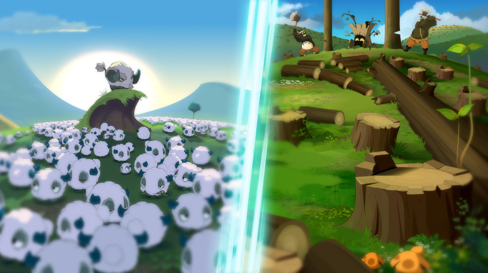

L'écologie
cher Ankama
Contexte
L'écologie devient un sujet de plus en plus prépondérant face à d'autre, suite à de nombreux avertissement de la part des États de nombreuses entreprises tel que Ankama ont décidés d'investir dans la défense de mère nature.
Tous passe par les livres
Instruire tout en sensibilisant les plus jeunes: c'est l'idée qu'Ankama à décidé d'adopter
Ankama édite beaucoup de livre porté sur l'écologie, ils n'hésitent pas à soutenir cette cause notamment en publiant plusieurs livres tel que Brume:petite histoire pour l'environnement, Unfollow, Eli & Gaston ou encore L’Esprit de l’automne Brume est un livre axé sur l‘écologie en racontant une histoire ressemblant à celle de l’humanité avec l’industrialisation, il peut s’agir ici d’un simple livre mais ankama cherche à faire réagir en publiant ce livre qui est une véritable action de soutien envers l’environnement afin que les faits accompagnent les paroles. Dans l'ensemble Ankama veut en passant par les livres, faire passer un message.
Les jeux vidéos, un moyen de communication
Pourquoi ne pas utiliser leur plus grande communauté pour conscientise leur fans face à l'environnement
Ankama possède une énorme communauté sur leur jeux vidéos sétendant à plus 600 000 joueur actifs. Leurs donnant donc une opportunité de communication énorme, sachant cela Ankama n'a pas hésité à s'exprimer ,en tous cas à montrer son engagement vis à vis de l'écologir sur leru différent jeux En cherchant à accentuer l’écologie sur son plus gros jeux Ankama veut faire passer un message à ses utilisateurs comme ils ont pus essayé avec le livre Brume, en instaurant un système de poubelle permettant aux joueur de jeter leur objets même dans un jeux afin d’éviter toutes pollution sur la carte. Certain joueur ont même commencé à discuter d’une possible taxe si l’on ne jetais pas nos objets dans une poubelle. Avec cette initiative Ankama montre très bien son engagement vis à vis de l’écologie et souhaite améliorer son image par rapport à cela.
Passage par l'animation
Dès leur première série d'animation, Ankama se porte sur l'environnement de la série
Dans cette série Ankama a incorporer un écosystème très varié et extrèmement protégé, un "simple" déchet sur le sol peut entrainer des conséquences pour le responsable, un geste qui peut paraitre anodin pour certain est un véritable poignard pour la planète."En 2020, nous avons l'intention d'améliorer considérablement l'écologie et les écosystèmes." Un développeur du jeu Wakfu à monter l'intention d'Ankama d'améliorer les écosystèmes dans le jeu mais aussi dans la série animé car les deux sont reliés, une amélioration qui prouve l'implication d'Ankama pour changer les mentalités pour l'écologie.
Action d'Ankama pour l'environnement
La société multimédia Ankama projette la mise en place d’un PDE (plan de déplacement entreprise).En commencant par participer à la semaine de la mobilité. L’élaboration d’un PDE s’inscrit dans la politique de responsabilité sociétale des entreprises (RSE) que mène Ankama depuis des années au travers de diverses actions au bénéfice de ses salariés, et de divers partenariats essentiellement tournés vers le développement durable et la solidarité Ankama va faire un diagnostic complet sur les habitudes de déplacement des salariés et l’accessibilité de leur locaux afin de pouvoir mettre en place différentes mesures et notamment une plateforme de covoiturage.Ankama à aussi fait installer une centrale géothermique pour son siège qui se situe à Roubaix avec l’aide de la MEL.
Ankama cherche à développe son image sur l'écologique, à travers ces différent produits, tels que leurs jeux vidéo Dofus qui est le plus connu, Wakfu , leur séries animée Wakfu,Dofus, Princesse Dragon ou encore leur livres « Brume:petite histoire pour l’environnement », Wakfu, Dofus et bien plus encore. Avec ces différents projets, Ankama sensibilise ses fans sur le sujet de l’écologie qui est aujourd’hui une question très controversé et important en voyant l'état actuel de la terre.